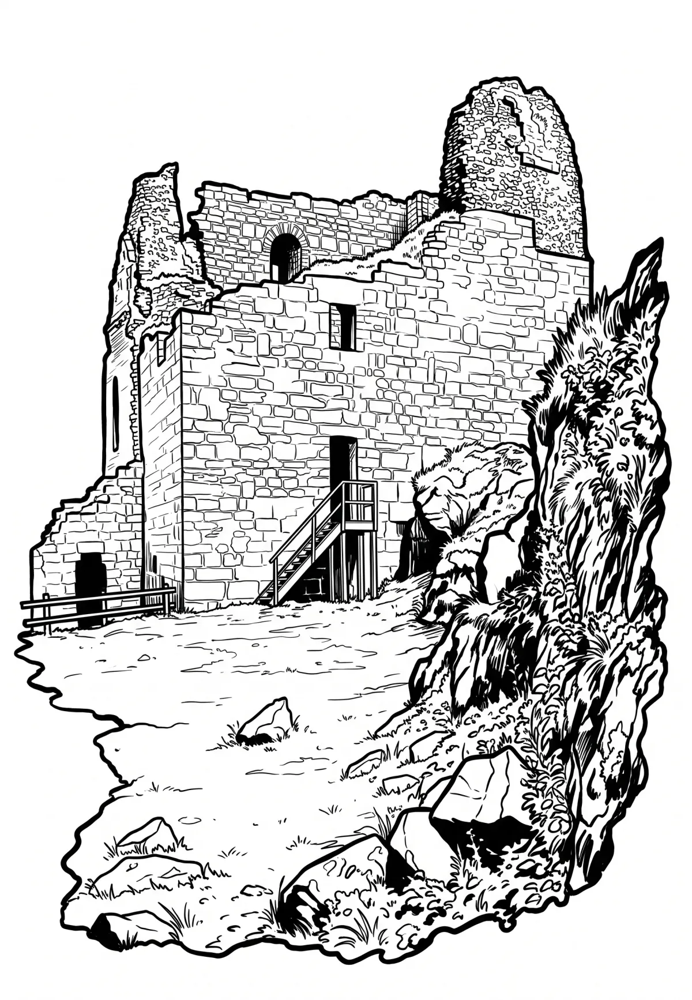

Přimda
Plzeňský kraj · 848 m n. m.

historická památka · #054
Přimda (německy Burg Pfraumberg) je zřícenina hradu ve správním území stejnojmenného města v okrese Tachov v Plzeňském kraji. Stojí na kopci Přimda v Českém lese. Zřícenina je chráněna jako národní kulturní památka. Spravuje ji Národní památkový ústav a hradní areál je přístupný veřejnosti.